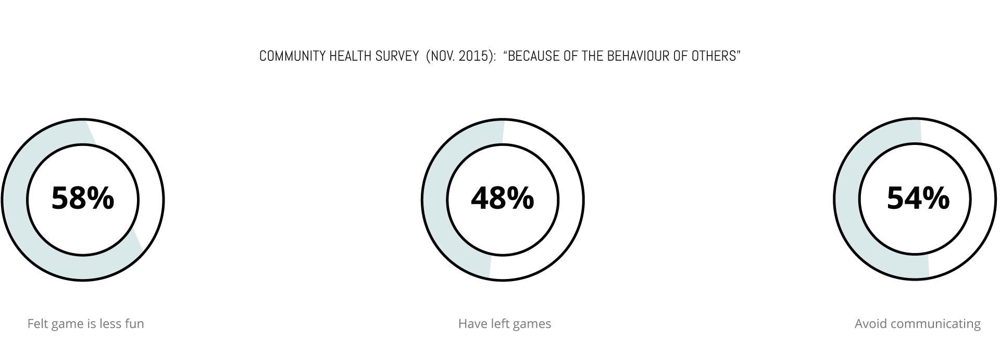
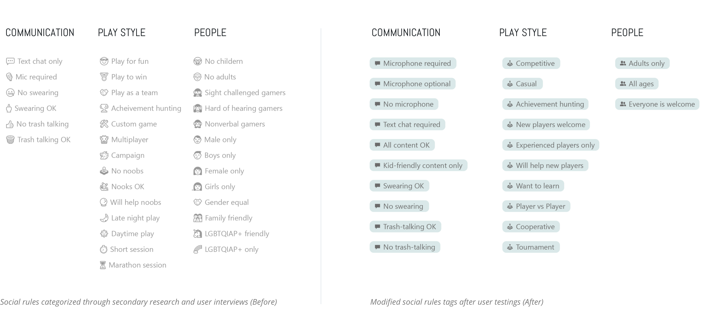
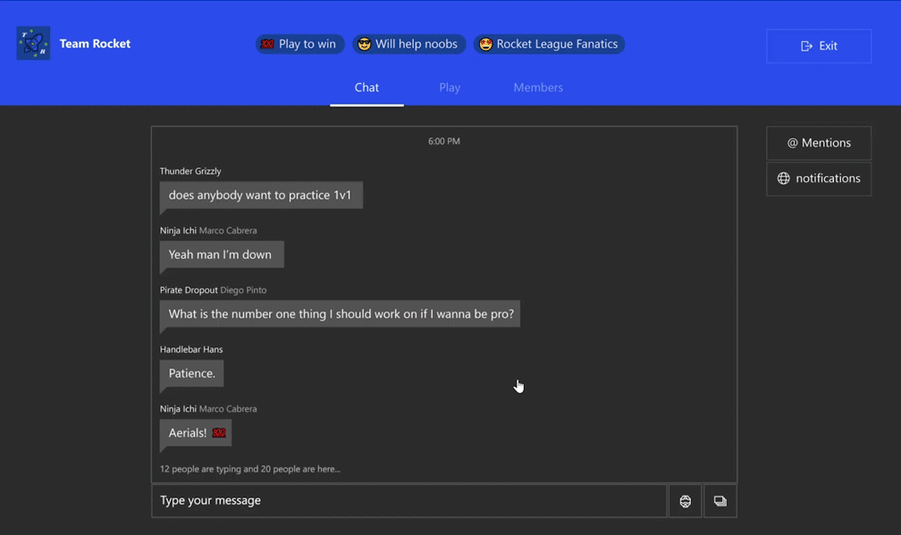
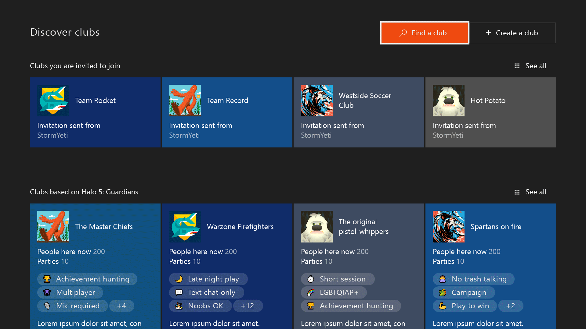
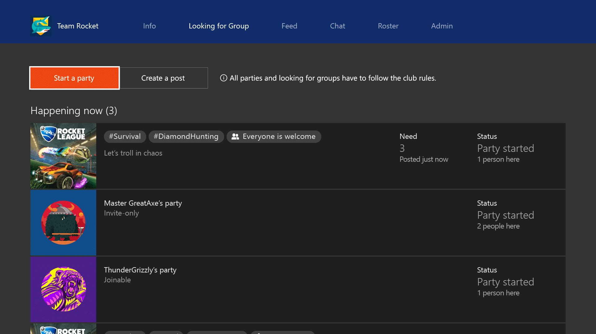

Xbox club
Xbox club help gamers to create, find and protect a community that play and communicate a way they enjoy
Duration: 6 months, 2016 | Role: Lead designer, interaction design
Duration: 6 months, 2016 | Role: Lead designer, interaction design
01. Problem
Gamers want to have fun gaming on Xbox Live, but the current social situation is unpredictable and too toxic.
Anonymity combined with little chance of receiving any punishment for bad behavior created an environment that is unfriendly for many Xbox users.
02. Goal
For users: Find like-minded gamers to gather, chat,
and play together under a safe social enviroment.
For business: Increase multiplayer hours and repeat play.
03. User research Hypothesis: Mimic "Place" to Xbox live
Ownership Places with ‘owners’ are better because they reduce culture clash and impunity. Owners can kick people out if they don't behave the way the place "defined"
Repeated visits People often return to places; visitors try to fit in because they may have future interactions with others in the place
We start with a hypothesis that: Once we build user-generated and user-managed clubs which mimic the real world"place", our users will create better social environments. How do we translate physical place into Xbox live ?
04. Design: transform "Place" concept into UI


05. What are social rules on xbox live?
Through survies, cart sorting, user researchers have defined three categories of social rules to start with. Design translate into tags for owners to add. 
06. Design Process
One of the interaction challenges in xbox is to design one cohesive experience on three platforms, PC, mobile and console. Here is one example of problems I encounter when
dealing with the chat feature on console.
How can we let users interact each chat message while still get quick acess to type a message ? I explored different layouts and interaction patterns in paper and wireframes. In the end, I built a prototype with the controller with the proposal I feel good about.
How can we let users interact each chat message while still get quick acess to type a message ? I explored different layouts and interaction patterns in paper and wireframes. In the end, I built a prototype with the controller with the proposal I feel good about.



07. The club experience
Club creation
- 1. Club owner defines a club type: public, private or hidden
- 2. Club owner creates a unique club name
- 3. Club owner defines the club rules, customize other info such as background, club picture, description, etc...

Discover
users can find a paricular club by input partical club name or description, filter down results by social rules or game assocaitions.
users can find a paricular club by input partical club name or description, filter down results by social rules or game assocaitions.

Play
As long as you are a member of the club, the gamer can host a party or post a game play to all the audience in the club. Even you are a guest, you can also join those parites to experience the club culture before deciding if you want to join or not.
As long as you are a member of the club, the gamer can host a party or post a game play to all the audience in the club. Even you are a guest, you can also join those parites to experience the club culture before deciding if you want to join or not.
Chat
If the gamer is not convenient to play,they can still get involved with the gaming community by using the chat fesature. They could set up chat topics for others to talk about for that day, or just call up club members to play through casual communication.
If the gamer is not convenient to play,they can still get involved with the gaming community by using the chat fesature. They could set up chat topics for others to talk about for that day, or just call up club members to play through casual communication.

Report
When gamers encounter any unpleasant moment in the club, they can report it to the club owners or moderators as well as xbox enforcement team. The club owner will review the reported content and make a decision to delete the unappropriate content or kick the toxic person out from the club.
When gamers encounter any unpleasant moment in the club, they can report it to the club owners or moderators as well as xbox enforcement team. The club owner will review the reported content and make a decision to delete the unappropriate content or kick the toxic person out from the club.
Management
Club owner can manage request to join, moderate reports and kick people out from the club if they behave inappropriately, they can also promote club members to be a moderator to co-manage the club together.
Club owner can manage request to join, moderate reports and kick people out from the club if they behave inappropriately, they can also promote club members to be a moderator to co-manage the club together.
07.Impact